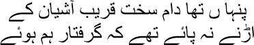
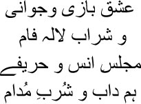

24

The trap had been laid close to my nest
I was caught before I could take wing
 know you’ve been fidgeting for a long time, my brothers. Mirza sahib told us a solemn story, but we’re street dogs, all of us—we cannot digest such good food. See how we’re shedding our fur, Mirza sahib. Not to worry, my brothers, what’s Manto here for? I have already scavenged some bones from the dustbins, which you can gnaw on to your heart’s content.
know you’ve been fidgeting for a long time, my brothers. Mirza sahib told us a solemn story, but we’re street dogs, all of us—we cannot digest such good food. See how we’re shedding our fur, Mirza sahib. Not to worry, my brothers, what’s Manto here for? I have already scavenged some bones from the dustbins, which you can gnaw on to your heart’s content.
Sometimes I’m amazed, Mirza sahib. How did I fall into the trap, damn it? When I got to Bombay I was having fun on the whole; even if I had to live in a slum, the joy of living alone can’t be matched. No obligations, nobody to be answerable to, live as you please. As Hafiz sahib had said:

Did you get the sense, my brothers? Give me youth, give me love, give me red wine, let companions gather, let my best friends be present, let me get food, O Lord. What else can a man living by himself want? Does anyone else have the freedom to live like this? But this damned Manto also fell into the trap. That’s the story that I’ll tell you now, my brothers.
Bibijaan arrived in Bombay from Amritsar. Arrangements were made for her to stay at my sister Iqbal Begum’s house. I barely managed to fit my own life into my shack; I could hardly let my mother stay there. I would meet bibijaan on the streets, we would have a cup of tea somewhere and talk. An infidel like me was not allowed into my sister’s house. Iqbal Begum’s badshah could not stand me, after all. Every day bibijaan would entreat me, where do you live, beta, take me there. I’ve come only for you. But I couldn’t possibly take bibijaan in there. To tell the truth, I didn’t want to show her how filthy a man’s existence could be. Would it have been right to soil her beautiful heart? But I couldn’t stop her indefinitely. One day she insisted on coming along with me to my kholi. Running her eyes around the dark cell, she stared at me, and then tears welled up in her eyes. I had never seen bibijaan weep this way. My eyes smarted too. Still I said with a smile, ‘What does a man need a bigger room for?’
— Manto …
Holding my arm, bibijaan sat on my dirty bed. Sitting by her side, I tried to run my hand over her back and shoulders and calm her down. Still she wouldn’t stop weeping, interspersing her sobs with cries of, ‘What have you shown me, O Lord!’ When her eyes finally dried, she began to gather my dirty clothes scattered around the room.
— What are you doing, bibijaan?
— You’re coming with me right now.
— Where?
— To Iqbal’s house.
— You know there’s nothing but hatred for me in that house, bibijaan.
— That doesn’t mean this hell has to be your …
— I’m fine, bibijaan. I swear on the lord, I’m very well. It is much better to live alone like this than to eat at a feast of hatred.
Bibijaan sat there in silence. Putting my hand on her shoulder, I said, ‘Let me take you back. This is why I didn’t want to bring you here. I didn’t want you to suffer, bibijaan.’ I had held myself in control all this time, but I couldn’t do it anymore, Mirza sahib. I broke down in tears. Not because I lived in a kholi, but because bibijaan had had to see this hellish existence.
After many long years, bibijaan put her arms around me again and kissed me over and over, as though I was a baby, muttering a single ruku from the Quran repeatedly. I couldn’t even understand what she was saying. I had never read the Quran, after all. The night before I died, when I was vomiting blood, I think I could hear her muttering. For the first time I wished I had understood the meaning. But how would it have helped? It was my final vigil.
As we walked along the street, bibijaan asked, ‘Can’t you earn a little more?’
— Why?
— Then you wouldn’t have to live in this garbage bin …
— I am fine, bibijaan. What would I do with more money? I get by comfortably on what I earn.
— No, you don’t. I know you don’t. But then you didn’t complete your studies, how will you earn more?
I had never been angry with bibijaan. But I lost my temper at this. Still, I controlled myself, saying, ‘Didn’t I just tell you I get by on what I earn? It’s possible to earn a lot even without an education.’
— Why don’t you try?
Now I decided to display a sense of humour. And this turned out to be my undoing. ‘Why do I need to earn more?’ I declared. ‘If I had a wife, it would have been different.’
— God is glorious! You want to get married?
— Yes. Why not?
This was mere repartee. But I did not realize how foolish I had been. Bibijaan asked me to visit Mahim next week. That’s where Iqbal and her husband used to live. I had set a trap for myself, Mirza sahib. I didn’t understand it then, but I did in Mahim next Sunday.
I was standing on the road outside Iqbal’s house. Spotting me from the third floor window, bibijaan came downstairs.
— Why did you ask me here?
— Come with me, beta.
— Where?
— Close by. Just come along …
— What’s going on?
— I’ve found a bride for you.
— What do you mean?
Smiling, bibijaan said, ‘Shafia. Very nice girl. She can take care of you.’
— Who told you I’m getting married now?
— Why, you did, the other day. I liked Shafia very much the first day I saw her. I spoke to her uncle as soon as I returned. We’re Kashmiri and so are they, they agreed at once.
— Bibijaan …
— What’s the problem?
— You know how much I earn. How can I get married?
— Everything will be fine when you have a wife. Come on, you’ll like Shafia too when you see her.
Bibijaan dragged me along with her. I was dying to escape. But she held my arm in an iron grip.
Making me sit down near a man the size of a hippopotamus, bibijaan disappeared inside the house. His name was Malik Hasan. He was Shafia’s uncle, and used to work in the detective department. A barrage of questions followed. I answered them all, and, as soon as I got an opportunity, informed him that I was in the habit of drinking every evening. I was trying to cut my way out of the trap. How could this marriage be possible? These people were aristocrats and I was a Bombay street dog.
When he got all his answers, Hasan sahib kept saying, ‘Excellent, excellent,’ as he paced up and down. Then he instructed someone, ‘Ask behenji to come here.’ Bibijaan arrived a little later. Grasping her hand, he said, ‘What a son you’ve brought up, behenji!’
Bibijaan looked at me. I assumed that both of us would now be thrown out. What could be happier news?
— It’s over.
— Meaning? I heard bibijaan croak.
— The marriage is settled. First, I will not let Shafia marry anyone besides a Kashmiri. And your son! Absolutely pure at heart. Even confessed that he drinks every evening. I wanted an honest man.
What kind of ill luck was this Mirza sahib, that made a detective like Malik Hasan assume I was an honest man? What a mistake I had made not telling him about the nights at Hira Mandi. And then I further entrapped myself through what happened next. ‘Bring the girl in, behenji,’ said Hasan sahib.
Shafia arrived, her face hidden behind a scarf. I saw her indistinctly, like a shadow. I wanted to touch her. For the first time I realized I was not someone who enjoyed living alone; I needed company even for solitude. Shafia Begum had to pay for my whims all her life. Whenever we were happy together for a couple of days, I would ask myself, what’s the use of all this writing, Manto? Make at least one person on this planet happy. Burn your paper and pens. Put your head on her breast and close your eyes, and let her draw invisible pictures in your hair while you go to sleep slowly.
The wedding day was fixed. I simply couldn’t believe it. I hadn’t imagined such a thing even in my dreams. It was like the sky falling on my head. How could I think of getting married when I didn’t have a penny in my pocket? I tried my best to explain to bibijaan, but she refused to listen. ‘It will be fine, beta,’ was all she would say. ‘Your wife will change your fortune. Hasan bhai would not have agreed unless the lord had willed it.’
What else was there for me to do but to submit myself to fate? I cast the boat off, take it where you will, river. I had been working as a part-time storywriter at the Imperial Film Company for some time. But the company was about to go belly-up. Else I could have got an advance. Suddenly I remembered that the company owed me fifteen hundred rupees, damn it. I asked Seth Ardeshir for my dues. In dire straits himself, he had no money to give me, but he arranged for some jewellery and saris for my future wife. Just imagine, my brothers, no money in my pocket, but the jewellery and saris for the bride were in place. This is what you call Manto-magic. So I made all the arrangements for the wedding myself. This was how, bit by bit, I came to love Shafia.
So bloody Manto got married eventually. Shafia continued to live with her uncle, while I went back to my kholi. Yes, my brothers, on my wedding night. As I lay in my mite-infested bed, I wondered whether I really had got married, damn it? Or was I dreaming? I still had some dry fruit and cardamom in my pocket. Which means you did get married today, Manto. I still couldn’t believe it. Only a madman would allow his daughter to marry Manto.
A year or so passed with Shafia still living at her uncle’s house and I, in my kholi. Hasan sahib was keen on our staying together, but I couldn’t possibly make my wife live in that shack. Eventually I couldn’t hold out anymore. Who can, my brothers? Your young wife lives elsewhere, while you dream of her every night in your filthy bed before falling asleep. I rented a flat for thirty-five rupees a month. This was Manto-magic too. A salary of forty rupees, and rent of thirty-five rupees. Five rupees a month to run the household!
But the film producer Nanubhai Desai owed me eighteen hundred rupees. I had written some stories for his films. I had to throw a party when bringing my wife home. I went to Nanubhai for my money. The bastard laughed and wept alternately, saying, ‘Check for yourself, Manto sahib, I haven’t a penny in my pocket. How will I pay you?’
I explained everything to the seth, but he simply wouldn’t understand. Eventually we were about to come to blows. Nanubhai got his people to throw me out of his office. On my part, I decided not to budge from the door till I had been paid. I’d go on a fast if necessary. What did they think writers were? That we’d be gratified because our stories had been accepted? The writer is supposed to starve, is he? Damn it, you can pay everyone for their services, but when it comes to stories, you expect to get them free? Are stories like leftovers lying around? It was the same thing with newspapers. The short story writers got the smallest payments. Why? Don’t dreams have any value? You can measure the world with money, but dreams are worthless?
Baburao Patel got to know of my battle against Nanubhai. I believe no part of the camel’s body is straight. Baburao would feature on this list immediately after the camel. He used the words ‘bastard’ and ‘motherfucker’ constantly. His eyes were small, his nose and lips thick, and his teeth were decayed, but his forehead was quite broad. The editor of Film India, Baburao also ran an Urdu magazine named Caravan. I had worked there for a few months. Apparently he had left home when still young because he couldn’t get along with his father. ‘That bastard is a swine,’ he’d say whenever the subject of his father came up. It was funny. If old man Patel really was a swine, Baburao was several jumps ahead of him. And whenever he saw a woman, he began to chase her. You know, he used to have a secretary named Rita, Mirza sahib. He used to slap her bottom in full view of everyone and cackle. So Baburao telephoned Nanubhai and gave him a piece of his mind, and finally went to Nanubhai’s office himself. After much bargaining, the final settlement was fixed at eight hundred rupees. I was over the moon. With cash in my hand I was a king.
After buying more saris and jewellery for Shafia and a bottle of Johnny Walker for myself, I found my pocket as penniless as before. When we moved into our new home, I found it even emptier than my pocket. There was no furniture whatsoever. But then, my brothers, I’ve always noticed that people always stand by people, eventually. The head of the family next to ours made arrangements for me to buy some furniture on instalments. But still both rooms looked like deserts.
Nazir Ludhianvi sahib printed the invitation cards. It was a raucous party. All the film people came. Kardar sahib, Gunjali, Bilimoria sahib, Baburaoji, Noor Muhammad, Padma Devi, and many more. Padma Devi wasn’t well-known yet. But Baburaoji transformed her. He turned her into the ‘Colour Queen’. Her photos appeared in every issue of Film World, with Baburao personally writing the captions. You get the game, don’t you, my brothers? This was what the film world was like. If you made it into the bed of the right person, you were bound to be successful.
It was a grand party. When it came to food, Mirza sahib, I was just like you. There was no question of being miserly or offering anything less than the best. All the food was cooked in the Kashmiri style. Baburaoji began to dance; meanwhile, Rafiq Ghaznavi, Nanda and Agha Kashmiri were abusing one another. Hell in uproar. After it was all over, bibijaan, Shafia and I drove in Bilimoria sahib’s car to our new home. How do I say this, my brothers, the next day I saw that I had half become Shafia’s husband already. But it felt good, too. It was an entirely unique sensation.
The next evening, I had just uncorked the bottle after returning home when Shafia grasped my hand. There was no indication of behaving like a new bride. Looking into my eyes, she said, no more drinking, Manto sahib.
— Why not?
— It’ll harm you.
— I can’t write without drinking.
— Do people have to drink to write?
— It’s not that …
— Then give it up.
— All right. But let me have my drink today.
— No, not a single drink more.
— It’s a very special day, Shafia.
— Why?
— My first day with you.
— Then what do you need a drink for?
— I do, I do. I put my arm around her waist. —How else will you get the real Manto in bed?
Laughing, Shafia put her arms around me. This was Shafia— simple, straightforward, capable of saying what was on her mind. She could love as strongly as she could protest. There was no pretence about her. But her life shouldn’t have been linked to Manto’s, my brothers. Manto grew up playing hide-and-seek with himself. He preferred losing himself in the labyrinth to taking the direct road. Shafia tried very hard, but she couldn’t wean me off alcohol. I told many lies, cheated her many times, for the sake of a drink. Yes, Mirza sahib, I would give up drinking for long stretches. I felt wonderful then, as though I’d been reborn. But then I went back. Ultimately I couldn’t get off that path ever in my life. Many years later Shafia said, ‘If you weren’t a writer, Manto sahib, our lives would not have been ruined this way.’ Perhaps.